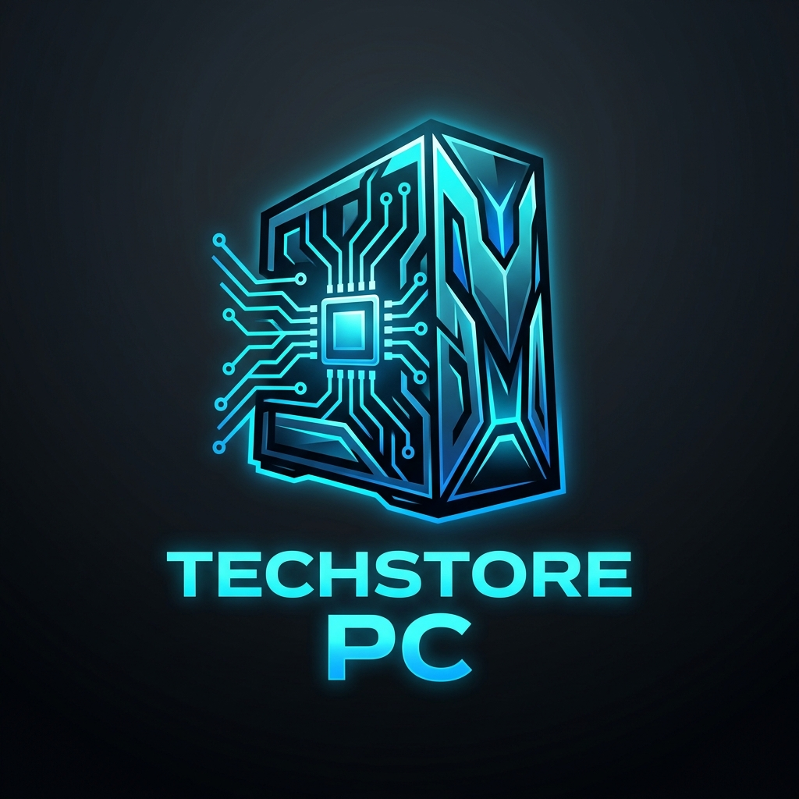

PCs de Escritorio Armadas
Computadoras completas ensambladas y probadas. Listas para trabajar, estudiar o jugar con el máximo rendimiento y estabilidad.


Especialistas en el armado y venta de computadoras de escritorio listas para usar, además del más amplio catálogo de componentes individuales para armar o mejorar tu equipo a tu gusto.

Computadoras completas ensambladas y probadas. Listas para trabajar, estudiar o jugar con el máximo rendimiento y estabilidad.
Gran variedad de piezas: procesadores, tarjetas de video, memorias RAM, fuentes de poder, tarjetas madre y almacenamiento SSD de última generación.

Elige cada pieza de tu computadora y nosotros nos encargamos del ensamble profesional, optimización y pruebas de rendimiento.

Ubicación: Av. Tecnología 1024, Zona Centro
Horario de atención: Lunes a Sábado de 9:00 a.m. a 7:00 p.m.
Teléfono / WhatsApp: +52 55 1234 5678
Correo electrónico: contacto@techstorepc.com